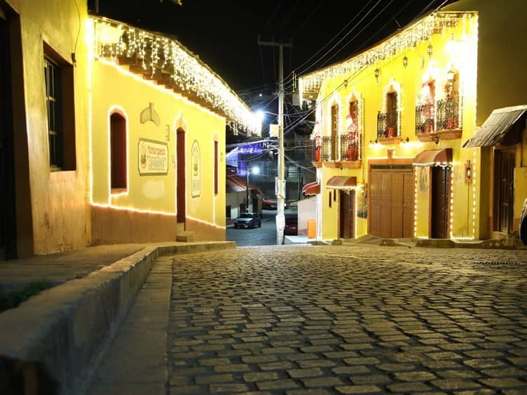
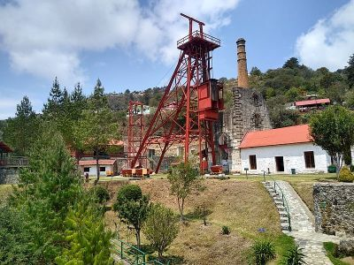
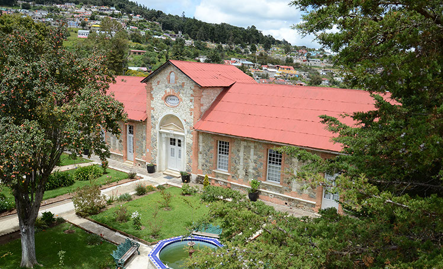
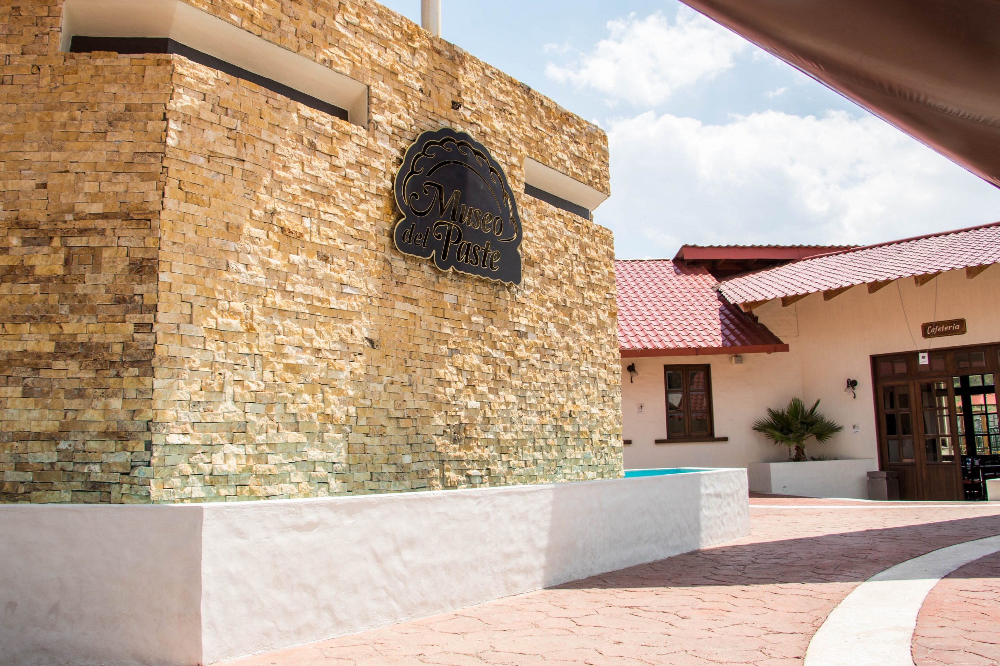
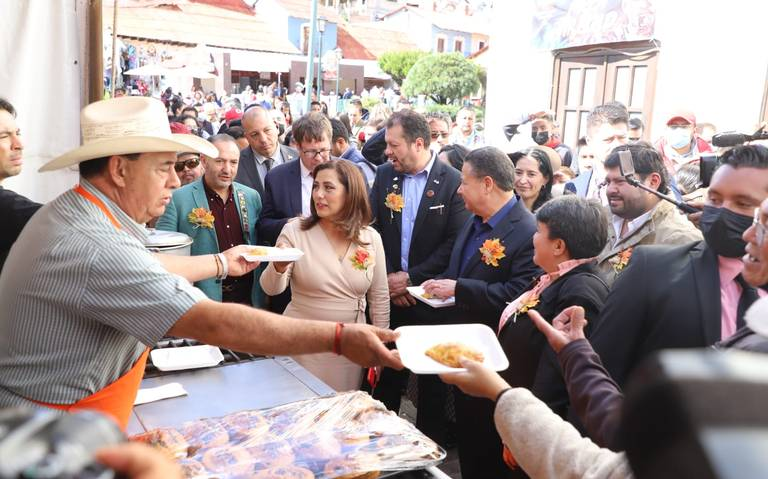
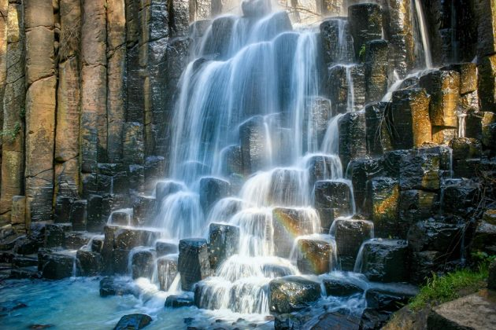
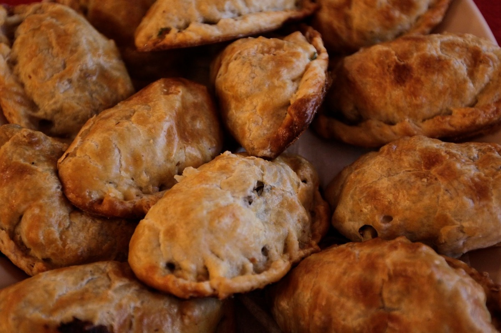
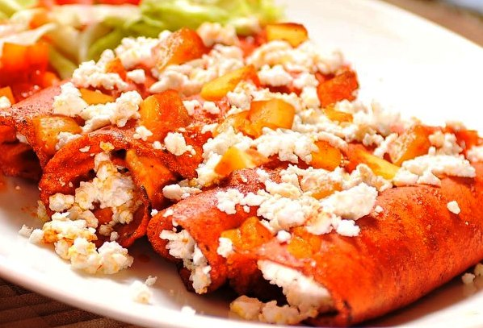

ARTESANIAS
ofrece al visitante artesanías elaboradas en plata, especialmente joyería,con la técnica del repujado, también se elaboran ornamentos en madera y palma, así como canastas tejidas.







ACTRACTIVOS
-Paseo por el Callejón de los Artistas
Esta es una de las cosas indispensables que hacer en Real del Monte. En este sitio se filmaron importantes películas durante la época de oro del cine mexicano, varias escenas de telenovelas, series nacionales y extranjeras se han grabado en este callejón.
-Mina de Acosta
Esta mina de plata fue célebre durante el siglo XVII, se ubica aproximadamente a 400 metros por debajo del suelo, Hoy en día es un museo importante que te permite ingresar a dicha mina, contemplar algunos instrumentos propios de la época, conocer una veta de plata y realizar un recorrido histórico.
-Museo de Medicina Laboral
Como gran parte de la población se dedicaba a trabajar en las minas hace siglos, hubo enfermedades que afectaron especialmente a los obreros, las condiciones insalubres en las que laboraban los expusieron a infecciones que en ocasiones resultaban mortales, en este museo, tú podrás conocer más sobre estos problemas de salud y los tratamientos médicos que se administraban.
-Museo del Paste
Uno de los imperdibles de Real del Monte, en este museo podrás crear tu propio paste, además de conocer la historia de este platillo típico tan famoso de Hidalgo, definitivamente una de las cosas que hacer en tu visita.
-El Festival Internacional del Paste
El paste es uno de los productos alimenticios más importantes de Hidalgo, es muy parecido a una empanada, es el momento ideal para romper la dieta, si quieres conocer más sobre este exquisito alimento o amas dicho manjar, no debes faltar al Festival Internacional del Paste, cada año se celebra en el mes de octubre y si visitas la ciudad en este mes,es una de las cosas que debes considerar experimentar.
-Prismas Basálticos de Hidalgo
Los prismas basálticos por su cercanía al pueblo mágico de Real del Monte,recuerda que los prismas basálticos son uno de los lugares turísticos más bellos e importantes de Hidalgo.
GASTRONOMIA
-Paste
alimento de origen británico introducido a la gastronomía hidalguense. Hoy en día es un platillo típico de las ciudades de Real del Monte y Pachuca de soto (oficialmente Mineral del Monte), en el estado mexicano de Hidalgo, los primeros ingleses reclutados provenientes del condado de Cornwall, provincia minera, trajeron como muestra de su alimentación el cornish pastry, que es la base para la elaboración de pasteles, pays, y principalmente los "pastes", que son una especie de empanada rellena con papa, poro o perejil, carne molida de res y pimienta negra, según la receta original.
-Enchiladas Mineras
constan de unas enchiladas verdes rellenas de pollo, como las conocemos, pero en versión caldosa, con trocitos de rábano, queso, crema y aguacate encima, tienen la opción de pedirlas compuestas, a las que le agregarían carne asada, huevo o chorizo.

